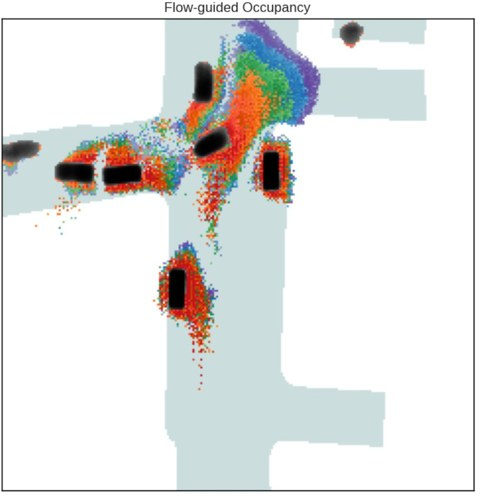
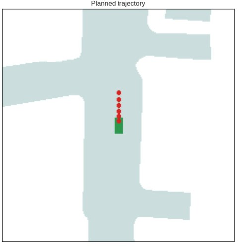

PlanFlow: Local Trajectory Planning for Autonomous Driving Using Flow-Guided Occupancy Grids
Flow-guided occupancy grids augment bird's-eye-view occupancy maps with per-cell flow vectors, combining occupancy, motion and uncertainty in one input. PlanFlow plans on them with a compact CNN backbone and an MLP decoder, trained with L1 and collision-aware losses, and achieves low collision rates on nuScenes against BEV-input baselines.